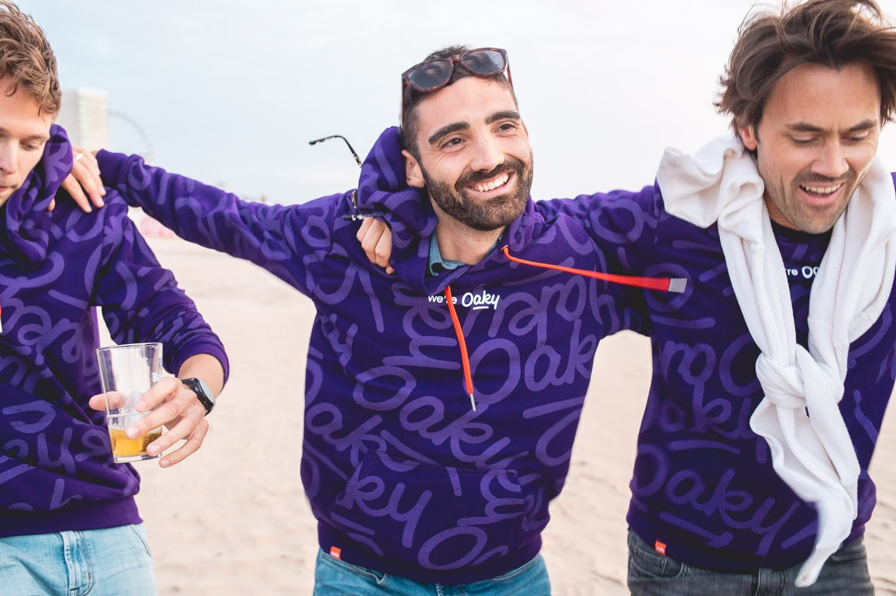
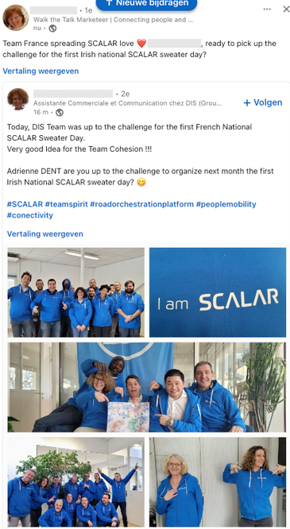
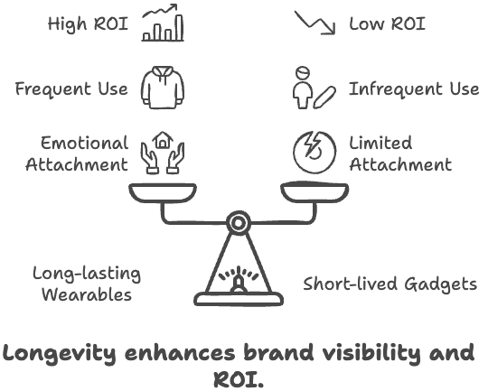
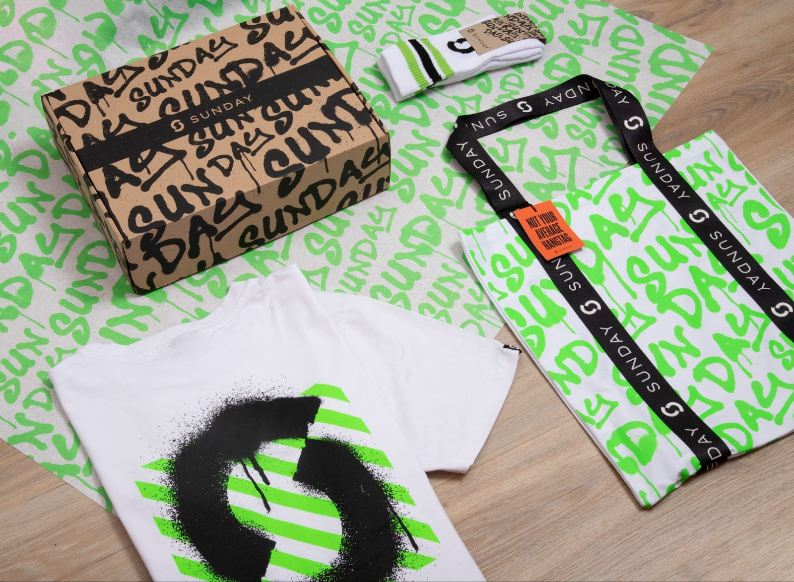

When it comes to creating impactful merchandise for employees or customers, businesses often face a dilemma: should they focus on wearable items or gadgets? Both serve different purposes, but not all merchandise holds the same long-term value. From our experience, we've found that the ideal split is 80% wearable merchandise and 20% gadgets. Here's why this approach yields the best results and how you can optimize your own merchandise strategy.
Wearable merchandise has a long-lasting impact that gadgets simply can't match. When people wear branded items like hoodies, jackets, or caps, they become walking ambassadors for your company. Every time they wear the item, they generate brand impressions, both for themselves and for others. Unlike gadgets, wearables create an emotional connection between the person and the brand, fostering loyalty and engagement over time.
Clothing is personal. It becomes part of the wearer's identity, and when someone chooses to wear your brand, they are showing pride in their association with your company. This emotional attachment is what makes wearables so powerful for long-term engagement. People won't feel that connection with a pen or stress ball, but they will when they wear your brand as part of their everyday routine.
The most successful wearable merchandise is something people actually want to wear. It needs to strike a balance between visibility and subtlety. People don't want to feel like walking billboards, but if the design is appealing and high-quality, they will happily wear it.
Outerwear like jackets or hoodies, as well as more unique items like branded socks or sneakers, tend to make the biggest impact. These items are part of people's daily lives and make them feel connected to the brand every time they wear them. Basics like t-shirts are also effective, but again, quality and design play a huge role in ensuring the item is used regularly.

Gadgets play a different role in the merchandise world. While wearables are great for building long-term loyalty and brand ambassadorship, gadgets are best used for short-term impact. They are perfect for high-volume situations like trade shows or events where you want to leave a quick impression on as many people as possible.
A gadget like a pen or a charging cable won't build the emotional connection that a wearable item will, but it serves as a physical reminder of your brand. They work well in lower tiers of engagement, for prospects who are just getting familiar with your company, or as part of a larger package where wearables are the core item, and gadgets are the useful extras.
For example, in an onboarding box, you might include a high-quality hoodie as the centerpiece, but a few practical gadgets like a water bottle or a notebook can add to the overall experience. These gadgets support the wearable but shouldn't be the primary focus if your goal is long-term brand impact.
We recommend investing 80% of your merchandise budget in wearable items and 20% in gadgets because this balance ensures that your core items create long-term value, while the gadgets deliver a short-term reminder. Wearables keep working for you over the years as they're used again and again, building ambassadorship and generating brand impressions each time they're worn.
On the other hand, gadgets are more of a short-term play. While they can be useful, they are often forgotten or discarded shortly after an event. For this reason, gadgets are better suited for high-volume, low-cost giveaways where the primary goal is short-term brand recognition rather than long-term loyalty.
The key to successful wearable merchandise is longevity. When someone receives a high-quality hoodie, jacket, or even socks, they may wear that item for years. Every time they wear it, they reinforce their connection to your brand, and they also create brand visibility for others. This daily usage ensures a higher return on investment (ROI) for your merchandise spend.
In contrast, gadgets like pens, stress balls, or low-cost tech accessories often have a short lifespan. They may be used a few times before being forgotten or thrown away. Even useful gadgets like charging cables are less likely to create the same emotional attachment as wearable items.
It's easier to measure the success of wearable merchandise because people are more likely to engage with it over time. Wearable items generate brand impressions and start conversations, making it easier to track their ROI. Platforms like our Sunday Wardrobe allow companies to measure wearability, tracking how often people wear the items and the impressions they generate.
While it's harder to measure the impact of gadgets, their effectiveness can be judged based on short-term feedback or engagement at events. However, it's clear that wearables will always offer more long-term value and emotional connection.
One common mistake companies make is focusing too heavily on gadgets without investing in quality wearables. It's easy to think that a tote bag filled with 10 gadgets will impress, but in reality, one good item can make a much stronger impact. Gadgets don't “stack” in value—the perceived value of a pack of cheap gadgets won't match the value of a single high-quality wearable.
Another mistake is neglecting to use wearables in high-impact situations like customer meetings or employee onboarding. Wearables are a powerful tool for creating connections and building brand loyalty, so they should be at the forefront of your strategy.
By focusing 80% of your merchandise budget on wearable items and 20% on gadgets, you can create a merchandise strategy that builds long-term engagement while offering practical short-term value. Wearables are your key to creating brand ambassadors, fostering emotional connections, and generating ongoing brand impressions, while gadgets help you leave a quick mark in high-volume, lower-stakes situations. With the right balance, your merchandise will not only be remembered but cherished and worn for years to come.
Looking to start dressing your team?
Want to discuss a project? Interested in
visiting one of our offices? Let us know!